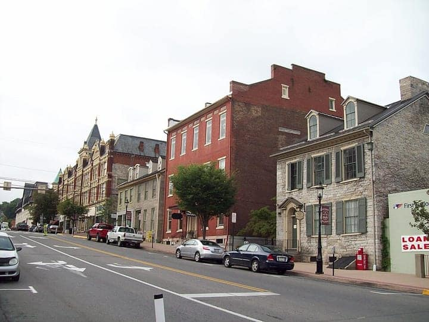

United States
State College
Happy Valley — Penn State, the creamery & Mount Nittany
48 places · 6 areas · every one sourced, pinned and status-checked · last checked · 4 closed, kept for the record. Ordered by tier, then by number of named sources. How we choose
Horseshoe Curve National Historic Landmark
Start with Tom & Joe's Restaurant
Start with

Downtown State College 3 places · area 1 of 6
College & Beaver Ave
-
1 Must see within Downtown State College · American
The Corner Room
https://www.cornerroom.com/
100 W College Ave, State College, PA
Recommended by ,
-
2 Worth the detour within Downtown State College · American
Allen Street Grill
https://www.allenstreetgrill.com/
100 W College Ave (2nd floor, Hotel State College), State College, PA
Recommended by ,
-
Closed — kept for the record · per Yelp 'The Diner - CLOSED'; sold 2018 ($1.5M) and gutted for redevelopment (wjactv / statecollege.com), checked 2026-08-27 3
Ye Olde College Diner — CLOSED
https://grilledstickies.com/
126 W College Ave, State College, PA
Recommended by ,

Penn State 8 places · area 2 of 6
University Park campus
-
1 Must see within Penn State
Palmer Museum of Art
Penn State's art museum in a striking 73,000-sq-ft Allied Works building that opened June 1, 2024 at the edge of the Arboretum, nearly doubling exhibition space to 20 galleries with a store, cafe and sculpture path. Free admission; a genuine regional cultural destination.
Palmer Museum of Art, The Arboretum at Penn State, Bigler Rd, University Park, PA 16802
Recommended by , ,
-
2 Must see within Penn State · American
Penn State Berkey Creamery
https://creamery.psu.edu/
Food Sciences Building, Curtin Rd, University Park, PA
Recommended by , ,
-
3 Must see within Penn State
Old Main
The symbolic heart of Penn State, crowning the hill above the campus mall. The 1930 Georgian building sits on the site of the original 1859 College Building of the Farmers' High School and houses the Land-Grant Frescoes by Henry Varnum Poor. Grounds open daily; the lawn is the campus's ceremonial gathering place.
Old Main, Pollock Rd, University Park, PA 16802
Recommended by ,
-
4 Must see within Penn State
Nittany Lion Shrine
One of the most photographed landmarks in Pennsylvania: a crouching mountain lion carved by sculptor Heinz Warneke from a 13-ton block of Indiana limestone, given by the Class of 1940. Reopened to visitors after a 2021-2022 site renovation; free, open-air, always accessible.
Nittany Lion Shrine, Curtin Rd near Rec Hall, University Park, PA 16802
Recommended by ,
-
5 Must see within Penn State
Beaver Stadium & Penn State All-Sports Museum
The 106,000-seat home of Penn State football and its All-Sports Museum, whose Upper and Lower galleries trace over a century of Nittany Lion athletics. Museum open Tue-Sat 10-4, Sun 12-4 (reduced winter hours; home-game-week changes); staff take guests to the club level for a view inside the bowl. Note: the stadium itself is under a multi-year renovation (Project Surge) through 2027.
Beaver Stadium, 1 Beaver Stadium, University Park, PA 16802
Recommended by ,
-
6 Must see within Penn State
The Arboretum at Penn State (H.O. Smith Botanic Gardens)
370 acres of gardens, meadows and woodland walks a mile west of Beaver Stadium, centered on the 10-acre H.O. Smith Botanic Gardens with pollinator habitats, water features, an Overlook Pavilion and a children's garden. Free admission, open dawn to dusk daily.
The Arboretum at Penn State, Bigler Rd & Park Ave, University Park, PA 16802
Recommended by ,
-
7 Worth the detour within Penn State · American
Brazilian Munchies
https://www.brazilianmunchies.net/
Pegula Ice Arena, University Park, PA
Recommended by , ,
-
8 Worth the detour within Penn State
Frost Entomological Museum
A free insect museum across from the Berkey Creamery, reopened in 2022 after renovation, with a live arthropod zoo and a research collection of hundreds of thousands of specimens. Open to the public 10-4 Monday-Friday; admission free.
160 Curtin Rd, University Park, PA 16802
Recommended by ,

Bellefonte & Boalsburg 10 places · area 3 of 6
historic towns

Photo: Pubdog · Public domain · Wikimedia Commons (resized) 1 Must see within Bellefonte & Boalsburg
Bellefonte Historic District
A remarkably intact Victorian county-seat downtown along Spring Creek, listed on the National Register, built during a 19th-century iron-and-industry boom and once home to seven Pennsylvania governors. Grand houses, the 1889 railroad station and a walkable core of shops and eateries. Free, self-guided.
High St & Allegheny St, Bellefonte, PA 16823
Recommended by ,
-
2 Must see within Bellefonte & Boalsburg
Boalsburg Historic District (Birthplace of Memorial Day)
A walkable stone-and-clapboard village that claims the first Memorial Day observance, traced to an 1864 cemetery gathering; the town center is full of shops, cafes and 18th-19th-century buildings and celebrates with a large Memorial Day weekend of events. Free, self-guided.
Main St, Boalsburg, PA 16827
Recommended by ,
-
3 Must see within Bellefonte & Boalsburg
Columbus Chapel & Boal Mansion Museum
The estate of the Boal family since 1789, whose Columbus Chapel — brought from Spain in 1909 by a Columbus descendant who married into the family — holds the explorer's admiral's desk, two relics of the True Cross and centuries of European art. Guided 90-minute tours Wed-Sun at 2pm; other times by appointment.
163 Boal Estate Dr, Boalsburg, PA 16827
Recommended by ,
-
4 Must see within Bellefonte & Boalsburg · American
Duffy's Tavern
113 E Main St, Boalsburg, PA
Recommended by ,
-
5 Worth the detour within Bellefonte & Boalsburg
Talleyrand Park & the Big Spring
Bellefonte's 3.5-acre riverside park along Spring Creek, fed by the Big Spring that pours out 11+ million gallons a day and gave the town its name ("la belle fonte"). Riverwalk, the restored 1889 passenger station, gardens and an Underground Railroad history marker. Free, open daily.
Dunlap St, Bellefonte, PA 16823
Recommended by ,
-
6 Worth the detour within Bellefonte & Boalsburg
Gamble Mill
A National Register grist mill (1786/1894) on Spring Creek in Bellefonte's waterfront district, extensively restored and reopened in 2021 as a boutique hotel, restaurant and cocktail bar. A landmark on the Riverwalk; dine or stay to see the interior.
160 Dunlap St, Bellefonte, PA 16823
Recommended by ,
-
7 Worth the detour within Bellefonte & Boalsburg
American Philatelic Center (Match Factory)
The headquarters of the American Philatelic Society, the world's largest nonprofit stamp-collectors' organization, in the restored 1900 Pennsylvania Match Factory. Highlights include a fully reconstructed century-old general store and post office, a library and galleries. Open to visitors; check hours.
100 Match Factory Pl, Bellefonte, PA 16823
Recommended by ,
-
8 Worth the detour within Bellefonte & Boalsburg
Centre Furnace Mansion
The restored ironmaster's mansion of Centre Furnace — the 18th-century iron works whose owners helped found Penn State — now the home of the Centre County Historical Society and listed on the National Register. Furnished to the Moses Thompson era (1842-1891). Guided tours on posted days; grounds and gardens open.
1001 E College Ave, State College, PA 16801
Recommended by ,
-
Closed — kept for the record · per pamilmuseum.org visit page + worklist — galleries closed for renovation (grounds/28th Div Shrine remain), checked 2026-08-27 9
Pennsylvania Military Museum — CLOSED
Pennsylvania's museum of the citizen-soldier, set on the 28th Division Shrine grounds in Boalsburg. CLOSED to the public since Dec 8, 2024 for a $3.4M modernization (HVAC, geothermal, preservation systems); the reopening, once slated for Feb 2026, has slipped to 2027. The outdoor grounds and memorials remain worth a look; galleries are shut.
51 Boal Ave, Boalsburg, PA 16827
Recommended by ,
-
Closed — kept for the record · per worklist — restaurant at Gamble Mill closed (Gamble Mill building itself remains), checked 2026-08-27 10
Creekside at the Gamble Mill — CLOSED
https://www.gamblemillbellefonte.com/
160 Dunlop St, Bellefonte, PA
Recommended by ,

Happy Valley & Centre County 10 places · area 4 of 6
Pine Grove Mills, Lemont, Penns Valley
-
1 Must see within Happy Valley & Centre County
Mount Nittany (Mike Lynch Overlook)
The mountain that gives Happy Valley its identity, with 8 miles of trails and seven overlooks above the valley. The short climb to the Mike Lynch Overlook (marker #3, ~0.6 mi up) gives the classic view over State College and campus; the full loop is ~4.8 mi. Limited trailhead parking in Lemont; free.
Mount Nittany trailhead, 500 Mount Nittany Rd, Lemont, PA 16827
Recommended by ,
-
2 Must see within Happy Valley & Centre County
Penn's Cave & Wildlife Park
America's only all-water cavern, toured entirely by boat, plus a wildlife park with a bus safari and off-road mountain tours. Cavern tours run Feb-Dec (daily 9-4 hourly in summer); the farm-nature-wildlife park runs Apr 1-Nov (closed for winter through Mar 31). Paid admission; the cave boat tour is not wheelchair accessible.
222 Penns Cave Rd, Centre Hall, PA 16828
Recommended by ,
-
3 Must see within Happy Valley & Centre County
Black Moshannon State Park
A 3,394-acre park atop the Allegheny Plateau built around a 250-acre lake and one of the state's finest bogs (1,992-acre Natural Area) with orchids and carnivorous plants. The half-mile boardwalk Bog Trail is the signature walk; 20 miles of trails, swimming and boating. Free day use; open year-round.
4216 Beaver Rd, Philipsburg, PA 16866
Recommended by ,

Altoona & Blair County 11 places · area 5 of 6
Horseshoe Curve, Lakemont, Tyrone

Central PA & the Alleghenies 6 places · area 6 of 6
Huntingdon/Raystown, Lewistown, Clearfield
How we choose
Every place is recommended by named sources (review-aggregator star ratings never count as the recommender), pinned to its door from a published coordinate, and status-checked. Closed places stay, flagged, so you know they’re gone.
- Must see
- The places to plan a visit around — graded within each area, not across the city.
- Worth the detour
- Strong picks, worth going out of your way for.
- Deep cut
- For the curious: smaller, odder, more local.
Within each area, places are ordered by tier, then by number of named sources — never by popularity. No ratings, prices or opening hours are shown, because the guide doesn’t hold verified ones.
34 sights and 14 places to eat across State College, the Penn State University Park campus and Centre County (Bellefonte, Boalsburg, Happy Valley), each traceable to the source that named it. The town’s canon is its own: Berkey Creamery ice cream, the grilled sticky at Ye Olde College Diner, tavern wings, Happy Valley beer, plus Old Main, Beaver Stadium and Mount Nittany.
Take State College with you
Every place, its sources, the Guidebook and the photos at a small size. Map tiles are not saved: offline, the map shows our own pin schematic and every place stays listed.